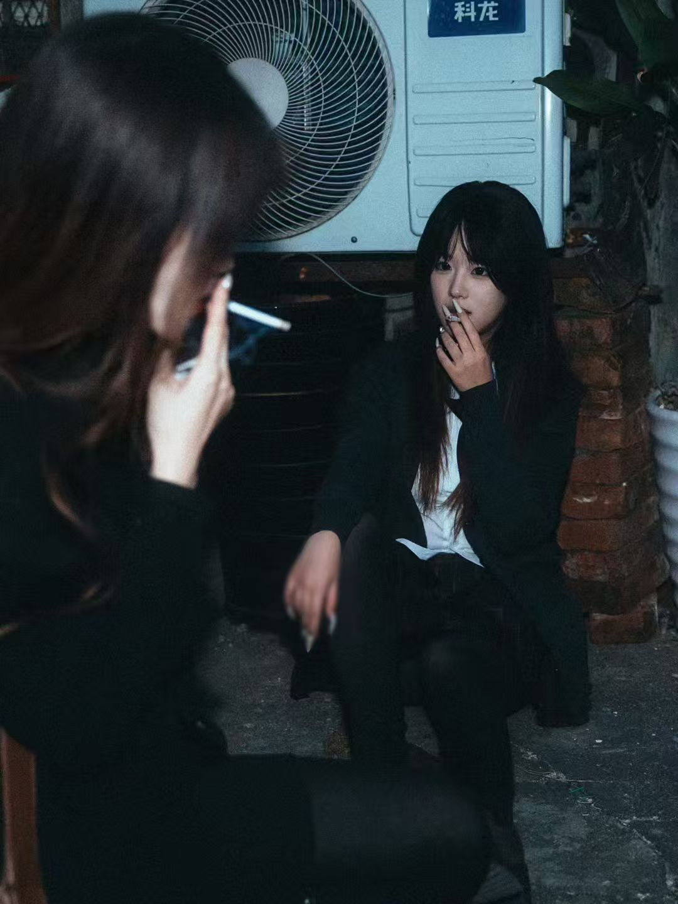
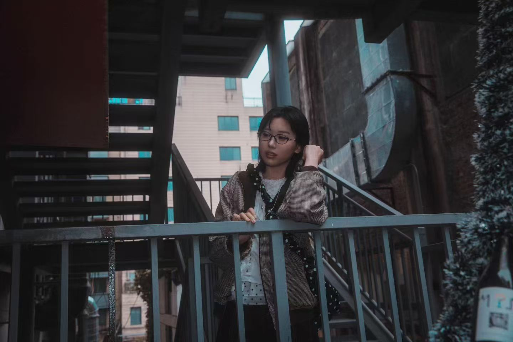
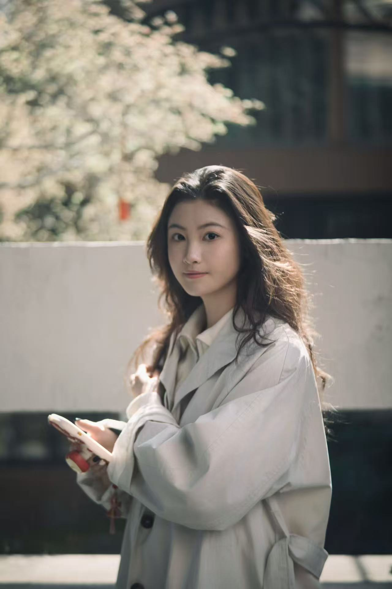
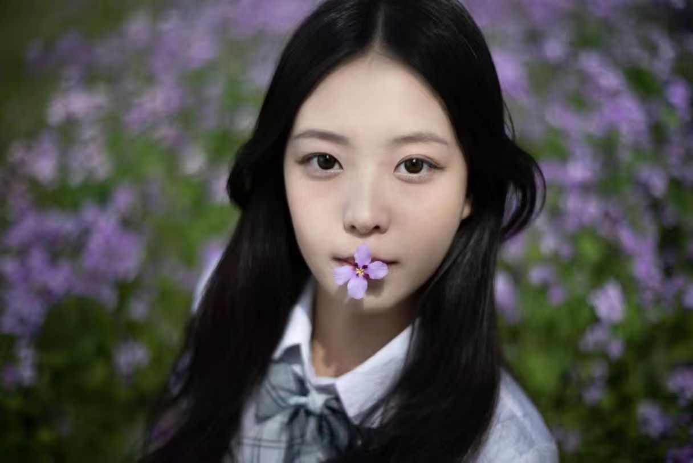

大蒙皮光影
青春人像 · 校园记忆

《图书馆的午后》
校园人像 · 2025
阳光透过书架，女生专注阅读的侧脸，静谧而充满书卷气。

《操场上的风》
运动人像 · 2024
黄昏跑道边，女生扎着马尾，微笑迎着晚风，青春洋溢。
《画室的背影》
艺术人像 · 2024
美术系女生在画架前调色，光影勾勒出专注的轮廓。
《樱花树下的约定》
外景人像 · 2025
校园樱花季，白裙女生回眸浅笑，花瓣飘落成诗。
《宿舍的窗》
生活人像 · 2024
午后阳光洒进宿舍，女生倚窗听歌，慵懒而真实。

《毕业季·奔跑》
毕业人像 · 2025
学士服女生在草坪上奔跑欢笑，向未来挥手。
《琴房的旋律》
音乐人像 · 2024
钢琴前的女生，指尖与光影共舞，宁静专注。

《林荫道单车》
街拍人像 · 2025
骑着单车穿过梧桐树影，笑声洒落一地。
《夜自习后的路灯》
夜景人像 · 2024
深夜从图书馆走出，暖黄路灯下女生疲惫却满足的脸。
叶
青春人像摄影总监
叶素一
人像摄影师，专注于记录年轻女性的自然美与内在情绪。擅长在校园、城市、自然环境中捕捉不加修饰的真实瞬间。 其作品曾获“全国青年摄影大赛”金奖，多次为高校创作毕业季主题影像。她主张：“摄影师只是光的引路人，每个女生都是自己故事的主角。”
📷 校园人像客片100+
🎨 2024 杭州青年艺术展
📖 《她·时光》摄影集
青春写真定制
提供校园、街拍、文艺等多种风格，记录你的大学时光。
人像摄影工作坊
针对女生的相机入门、手机摄影、自拍指导。
毕业季策划
集体照、闺蜜照、个人纪念册，珍藏青春记忆。